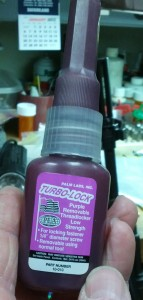

RoCo original grips
I bought a S&W 1911 in 9mm last October. I took it to my gunsmith to have the grips replaced. It came with RoCo wood grips in a medium width. I have very small hands so I selected a set of Halpern Ultra Slim Titanium grips. They were basically the same color as the gun so I considered that a bonus. See the gun with the new grips here.
{kind=link}
As I’m learning to expect, I ran into a few issues. The bushings should have been attached to the frame of the gun. Two of the 4 were… the other two were attached to the wooden grips.

Halpern Ultra Slim Grips
My gunsmith advised me to send them back to S&W and ask them to remove the bushings from the original grips. If I want to sell the gun at some point, it is likely the next owner will have larger hands and will want to use these grips. I called S&W on November 19, 2012 and was told they would send me a return label and shipping instructions. The problem would be addressed. Why did I call? Because the website was broken. Really.
I received the return label Nov 24th, the day after Thanksgiving. I mailed the grips to S&W on November 29th, 2012. I received a set of replacement grips on February 15th, 2013. It’s a very good thing I wasn’t in a hurry for these, eh? They are missing the bushings and screws I returned with the original grips. So after almost 3 months from when I contacted them concerning this defect, I find I will be contacting them again. I sent email tonight requesting the missing parts. I’ll post an update if they ever show up.
 As for the ultra slim grips, my gunsmith had to cut out a place on the back of one side for the safety to swing up and down. He had to use special slim grip bushings as the new grips are much thinner than the original grips. I lost a screw in the first month. Was at the range, looked down and no screw in one of the holes. My gun smith gave me another (he is good to me) and then advised I invest in something like the “Turbo-Lock” pictured. Each time I clean that gun, threadlocker needs to be applied to the screws to ensure they don’t vibrate out.
{kind=link}
S&W is teaching me patience. My gunsmith is teaching me to be self-sufficient. I’m not impressed with S&W and I’m learning to value my gunsmith.
Pingback: S&W warranty work: call, don’t email | Girl Goes Bang
Pingback: Got the bushings and screws from S&W! | Girl Goes Bang
Hi,
You have stellar taste in guns – I love 1911s, especially the S&W. I am sorry to hear your experience was less than perfect, but I hope it worked out for you in the end.
So, grip bushings are normally used with slim grips only. They don’t normally come with a gun unless it has slim grips, and slim grips don’t always come with them (they make you buy them separate). A bushing takes up space between 2 objects. With thinner grips the screws can’t go in far enough to make the grips tight, so a bushing is used to take up the extra space.
Also, you can apply thread locking compound occasionally – Similar to a bushing, basic thread locking compound takes up the clearance space between male and female screw threads (the space is there so the screw doesn’t bind up with friction when it turns). The thread locking compound will stay on the screw after you remove it.
However, most 1911s use a rubber 0-ring to keep tension on the screw effectively performing the same function as the thread locking compound (tension keeps one side of the threads engaged, male to female, and thus they are bound by friction).
It sounds like you need a new gunsmith.
Thanks for stopping by!
This all was taken care of by S&W with no further issues. The problems I’ve had with a failure to eject have been ongoing. The gun has been back to S&W twice this year (2015). I’ll be taking it back out to the range again Sunday. I’m crossing my fingers the last visit to S&W has her running right again.
Thank you for sharing! I am really interested in this gun so I’m eager to hear how things turn out for you. The gun really fits the hand nicely and seems to be built very well, although I have heard of just a few complaints about the extractor.
I’ve had ongoing problems with this gun. It’s been to two gunsmiths then back to S&W twice. I just got it back and put 50 rounds through it over the weekend with no issues, but I’d never trust it as a carry gun.
I shoot it in competitions and in the last few months I was getting jams on an average of one stage per match. I want to love it… but I’ll have to put more time in with it to determine if it’s actually fixed.
I am starting to think there is wisdom in sticking to a .45 if you are buying a 1911.
I have no idea where you are located but if you are local to Raleigh, NC I’d be happy to let you shoot it.
Here’s more on the first time I sent it back to S&W: http://girlgoesbang.com/1911-is-back/